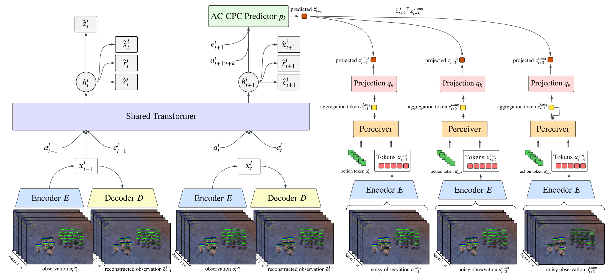
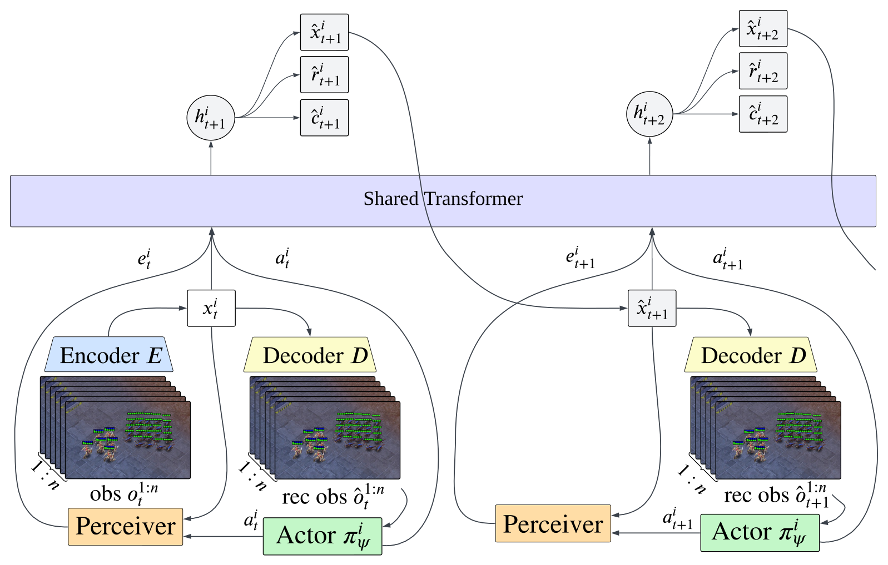
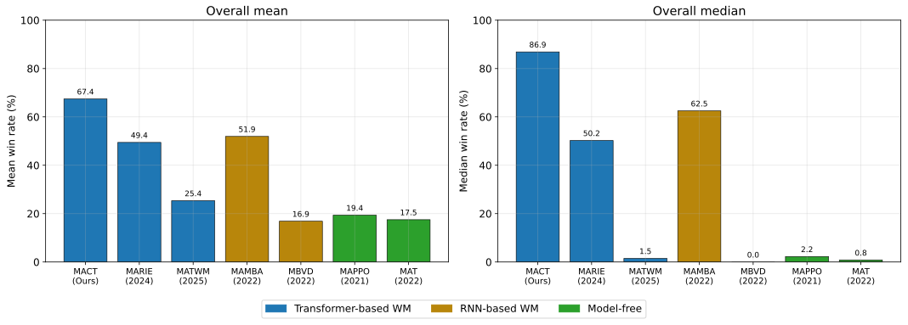
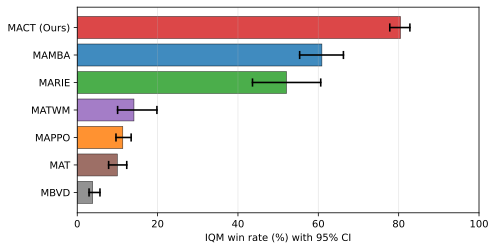
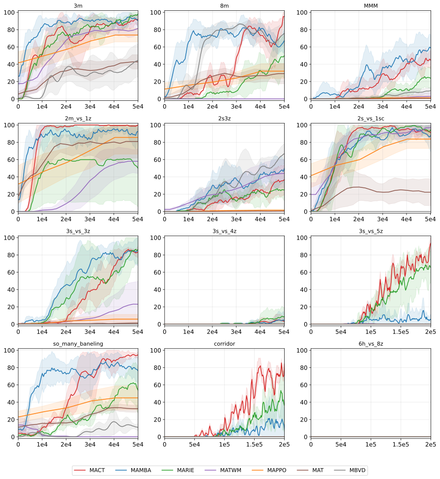
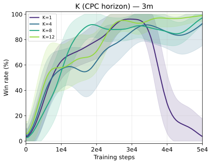
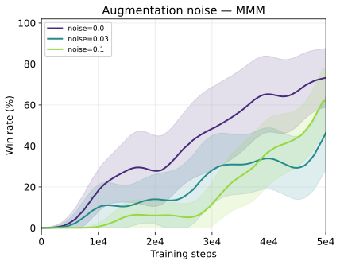
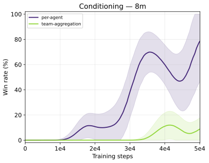

MACT across five SMAC maps, captured from the StarCraft II engine. The coloured rings are the world model's own prediction of where each enemy will be, one to five steps ahead, and the bars below show how close each of those predictions landed against a baseline that assumes nothing moves.
Multi-agent reinforcement learning (MARL) has achieved strong results on large-scale decision making, yet most methods are model-free, limiting sample efficiency and making coordination harder as teammates' policies evolve during training. Model-based reinforcement learning can reduce data usage, but planning and search scale poorly with joint action spaces. We introduce MACT, a decentralized action-conditioned Transformer world model for long-horizon cooperative control. Each agent processes discretized observation-action tokens with a shared Transformer, while a single cross-agent Perceiver step provides global context under centralized training and decentralized execution. MACT targets long-horizon coordination by coupling Perceiver-derived global context with an action-conditioned contrastive objective that predicts future latent representations over a short horizon conditioned on planned actions. On the StarCraft Multi-Agent Challenge, MACT achieves the strongest aggregate performance among 6 model-free and model-based baselines under matched low-data training budgets. Across 12 maps, including 2 SuperHard scenarios, MACT attains the best mean and median win rates, and ablations show that multi-step prediction and per-agent action conditioning are central to its gains.
Prior multi-agent world models (MAMBA, MARIE, MATWM) are supervised almost entirely by one-step reconstruction, which biases representations toward short-term correlations, so rollouts drift. That is exactly where cooperation lives: focus fire pays off only after several agents commit to the same target across multiple steps.
MACT keeps the scalable pipeline and changes what the model is asked to predict. Each agent must predict, in latent space, what its team-conditioned context will look like K steps ahead, given the actions it intends to take.

World-model training. Observations are tokenized by a VQ encoder, a shared per-agent transformer produces local latents and one-step heads, and the AC-CPC predictor is contrasted against projected Perceiver targets computed from augmented future observations.
For each horizon k the predictor sees the agent's local latent, its Perceiver context, and the action window it is about to execute, and must predict the projected context k steps later. The target is a feature-dropout augmented view of the future observation, intended to make the target less vulnerable to exact token matching, and the ablation below shows how map-dependent that actually is.
Conditioning on the agent's own action window is what makes the objective
action-conditioned: if I do this, in this team context, my future context looks like that.
Team context already lives in the Perceiver latent e, so a pooled joint-action
summary on top is redundant and identity-agnostic, because it blurs who did what.
The ablation below measures that directly.
After each world-model update the model is frozen and rollouts run in latent space for H steps. Decentralized actors consume decoded observations, and a centralized critic scores the joint latent under CTDE. Gradients never reach the world model. At execution time only the tokenizer and each agent's own actor are needed. No world model, no planner and no search over joint actions.

Behaviour learning. The frozen world model rolls forward in latent space, and each agent's actor picks the next action from its own decoded observation.
Every method is re-run in one harness on a pinned SC2.4.1.2.60604 build, with
identical per-map step budgets and the same 100-episode greedy evaluation:
50,000 environment frames on ten maps, 200,000 on 3s_vs_5z and
the two SuperHard maps.
Under one protocol the ranking changes. MATWM does not reproduce its published strength, and
MAMBA is the strongest baseline. MACT still has the highest mean and median across the
twelve maps and leads on five, with the largest margins on the coordination-heavy and
long-horizon maps. The limits are equally clear: 3s_vs_4z stays low for
everyone, 2s3z favours MBVD, and 6h_vs_8z is unsolved by all.

Aggregate win rate over the twelve maps, coloured by world-model family. MAMBA is the strongest baseline once every method is re-run in the same harness.
| Map | Steps | OursMACT | MARIE | MATWM | MAMBA | MBVD | MAPPO | MAT |
|---|---|---|---|---|---|---|---|---|
| 2m_vs_1z | 50K | 99.2 1.2 | 52.0 44.9 | 58.1 13.2 | 92.0 11.7 | 0.0 0.0 | 56.8 16.6 | 81.0 20.4 |
| 2s_vs_1sc | 50K | 91.9 7.4 | 92.0 7.5 | 96.7 3.1 | 86.0 13.9 | 0.0 0.0 | 60.0 11.4 | 23.9 13.0 |
| 2s3z | 50K | 35.6 17.4 | 25.0 11.0 | 43.9 16.5 | 46.0 12.4 | 65.0 11.5 | 0.9 0.8 | 0.4 0.5 |
| 3m | 50K | 91.2 6.2 | 96.5 3.7 | 79.3 7.7 | 92.0 6.0 | 43.0 20.6 | 57.4 11.0 | 42.0 3.5 |
| 3s_vs_3z | 50K | 82.5 4.7 | 85.0 16.4 | 23.2 25.3 | 76.0 18.0 | 0.0 0.0 | 3.6 3.5 | 1.1 0.7 |
| 3s_vs_4z | 50K | 3.8 5.3 | 9.0 11.1 | 0.1 0.2 | 5.0 10.0 | 0.0 0.0 | 0.0 0.0 | 0.0 0.0 |
| 8m | 50K | 95.0 5.0 | 48.5 23.2 | 0.0 0.0 | 65.0 12.6 | 74.1 13.6 | 19.5 5.7 | 28.2 8.9 |
| MMM | 50K | 43.3 7.2 | 23.5 10.7 | 2.8 4.1 | 60.0 15.8 | 9.0 3.9 | 0.8 1.5 | 0.5 1.0 |
| so_many_baneling | 50K | 94.2 2.4 | 56.5 26.6 | 0.0 0.0 | 77.0 16.0 | 11.2 3.1 | 33.5 9.5 | 32.9 4.2 |
| 3s_vs_5z | 200K | 95.0 3.5 | 66.5 16.4 | 0.0 0.0 | 15.0 13.4 | 0.0 0.0 | 0.0 0.0 | 0.0 0.0 |
| corridor | 200K | 77.5 20.9 | 38.8 31.2 | 0.0 0.0 | 10.0 14.1 | 0.0 0.0 | 0.0 0.0 | 0.0 0.0 |
| 6h_vs_8z | 200K | 0.0 0.0 | 0.0 0.0 | 0.0 0.0 | 0.0 0.0 | 0.0 0.0 | 0.0 0.0 | 0.0 0.0 |
| Mean | 67.4 | 49.4 | 25.3 | 52.0 | 16.9 | 19.4 | 17.5 | |
| Median | 86.9 | 50.2 | 1.4 | 62.5 | 0.0 | 2.2 | 0.8 |
Table 1 of the paper. Mean±std win rate (%), smoothed over the last five evaluations. Bold marks the best on each map, grey the second. Every method was re-run in this harness. No number is carried over from another paper.

Because single SMAC maps are high variance, aggregate uncertainty is reported with the rliable protocol over all twelve maps. MACT reaches an IQM of 80.4, against 60.9 for MAMBA, 52.1 for MARIE, 14.1 for MATWM, 11.3 for MAPPO, 10.0 for MAT and 3.8 for MBVD. Probability of improvement is 0.63 over MAMBA and 0.68 over MARIE.

Evaluation win rate against environment steps for every method under the unified protocol (mean±std over seeds, Gaussian-smoothed).
Episodes rolled out from the trained checkpoints, captured from the StarCraft II engine
itself. In every clip the learned policy plays red and the built-in AI plays blue. Both
methods run through the same evaluation path (tokenizer plus decentralized actor, no world
model at test time) on the same pinned SC2.4.1.2.60604 build.
Every released checkpoint was re-run for 30 evaluation episodes, and Table 1 reports the
mean over seeds. Where only one checkpoint survives for a method on a map the seed count
is stated, because a single seed cannot show the spread the paper reports.
Eight Marines a side. A kill only happens if several agents commit to the same target and hold that commitment for several steps, which is the behaviour the action-conditioned objective is meant to represent.
MACT on 8m. The learned policy plays red, the built-in AI plays blue.
Heterogeneous teams of Marines, Marauders and a healing Medivac differ in range and role, so the team must commit to a plan that only pays off several steps later. This is also the map with the widest seed spread, and one MAMBA wins outright.
MACT (left) and MARIE (right) on MMM. Across 30 episodes per seed, MACT's two available policies scored 46.7% and 0.0%, a
mean of 23.4%, against the paper's 43.3 ± 7.2. MARIE scored 6.7%
(paper: 23.5 ± 10.7). On this map a run either finds the coordinated behaviour or
collapses outright. The clip shows the seed that found it.
Banelings detonate on contact and damage everything nearby, so a clumped formation loses instantly. MACT reaches 94.2% against MARIE's 56.5%.
MACT (left) and MARIE (right) on so_many_baneling. Across 30 episodes per seed,
MACT's three policies won 100%, 100% and 96.7%, a mean of 98.9%,
against the paper's 94.2 ± 2.4. MARIE's single available policy won
36.7% (paper: 56.5 ± 26.6). This is the cleanest reproduction of the paper's ordering in our set.
Not every map favours MACT. On 3s_vs_3z MARIE is slightly ahead (85.0% vs 82.5%), and
both are within each other's seed variance. We include it because the honest read of the results is
that the advantage is concentrated in coordination-heavy settings rather than uniform across SMAC.
MACT (left) and MARIE (right) on 3s_vs_3z, both winning. MACT's three policies
scored 86.7%, 70.0%, 90.0%, a mean of 82.2%
(paper: 82.5 ± 4.7).
MARIE scored 96.7% (paper: 85.0 ± 16.4). MARIE leads here, as it does in the paper.
We include the case the method loses.
Three controlled studies on 3m, MMM and 8m, one factor
at a time with architecture, optimizer and protocol fixed.



@article{kich2026mact,
title = {Action-Conditioned Transformers for Decentralized Multi-Agent World Models},
author = {Kich, Victor A. and Yamamori, Satoshi and de Jesus, Junior C. and Morimoto, Jun},
journal = {Transactions on Machine Learning Research (TMLR)},
year = {2026},
issn = {2835-8856},
url = {https://openreview.net/forum?id=99nyrFfTJf}
}